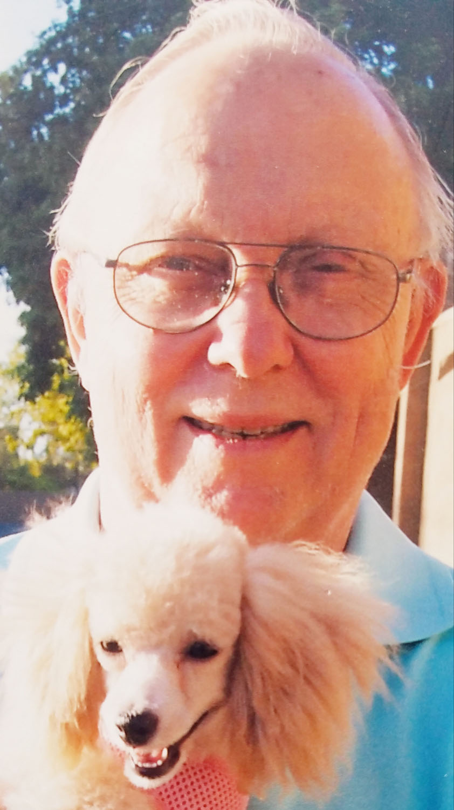

|
 |
Gemini Community Remembers Tom HiltonAugust 9, 1945 - October 22, 2018
Tom was born in Florida and raised in Mississippi. He joined the USAF shortly after starting college. He was a Viernam veteran and shortly after serving there he went to Korea where he met his wife Sun Cha. Together they had 2 children: daughter, Christine; son, Timothy. He also has 4 grandchildren: Geoff, Kyle,Trystan, Seraphim, 2 great granchildren: Temperance and Hope. Thomas always loved science and music. He spent much of his time doing astronomy in his later years. He was a great man and always there if you needed him. He is greatly missed by the whole astronomy community. |